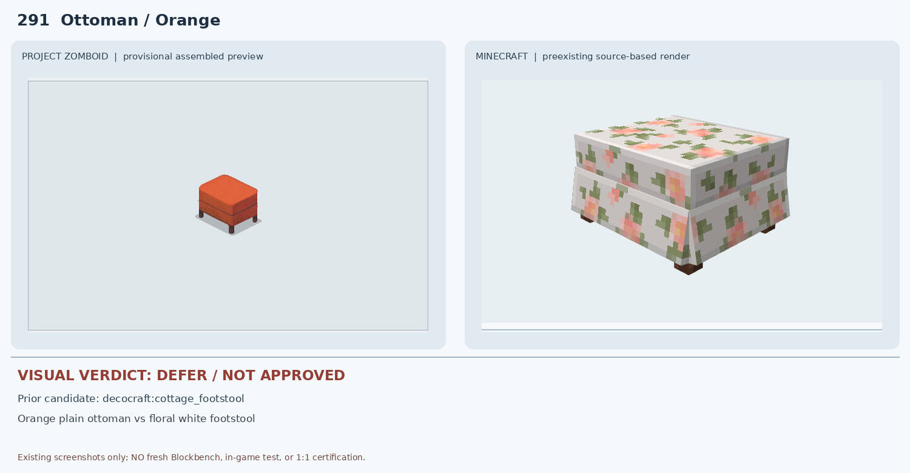
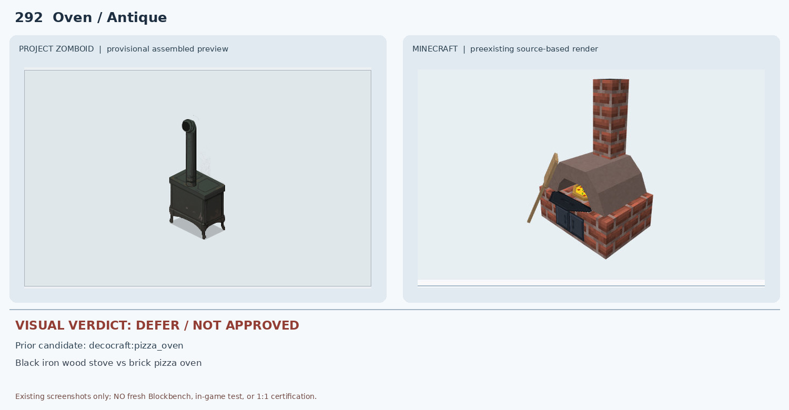
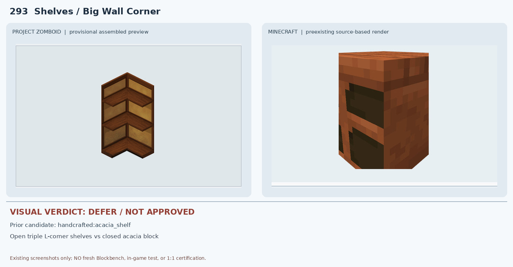
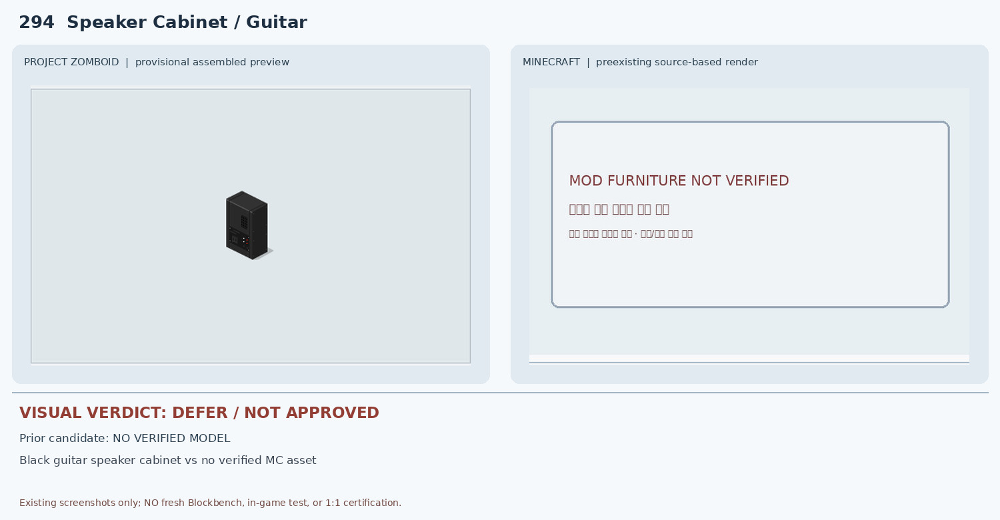
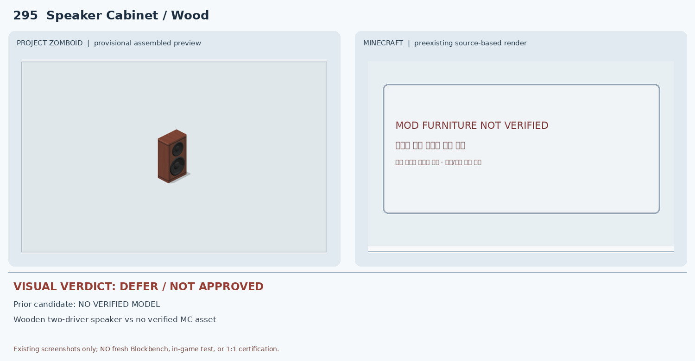
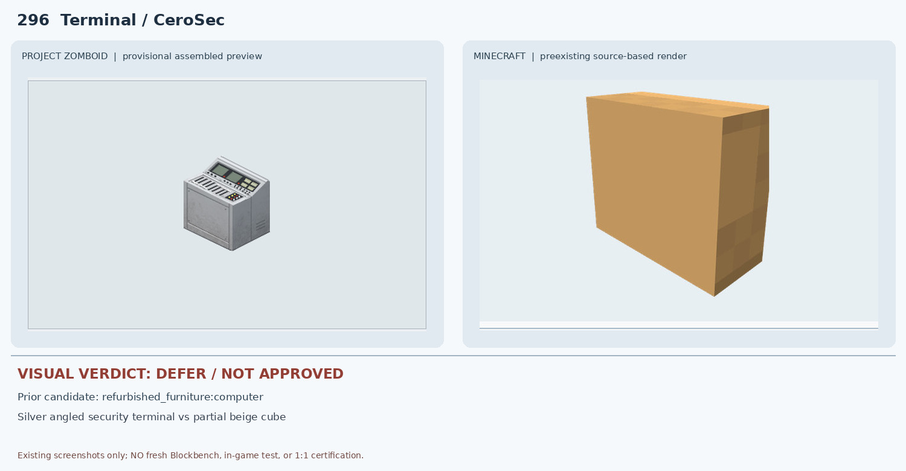
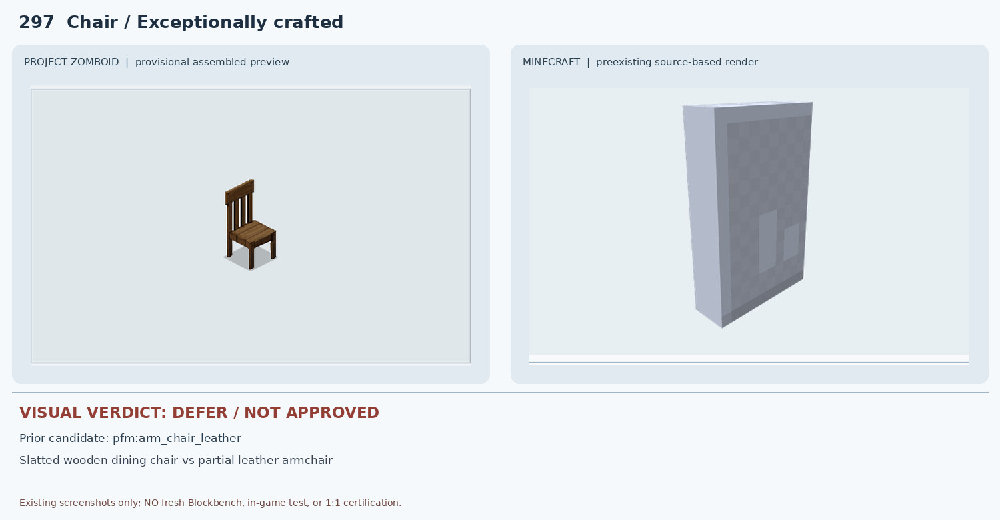
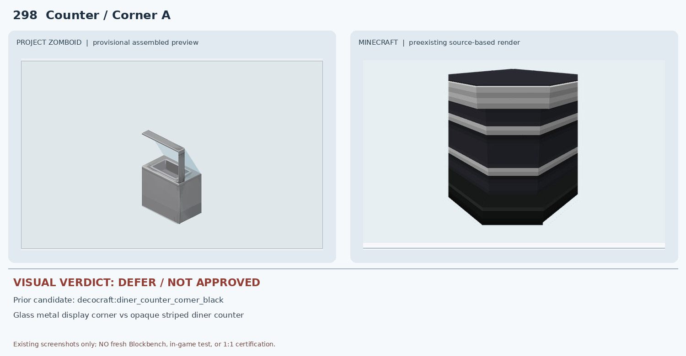
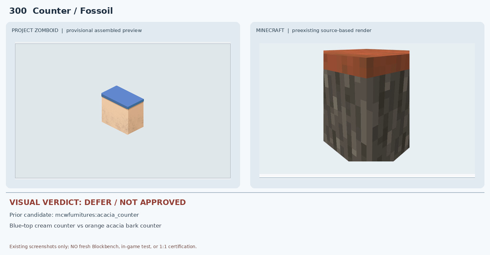

291 Ottoman / Orange — DEFER

PZ는 무늬 없는 주황색 작은 발받침이지만 MC 원본 cottage_footstool은 흰 바탕에 꽃무늬가 반복되는 두꺼운 발받침이다. 용도만 같고 색상·무늬·비례가 다르다.
10 deferred. Prior source screenshots only; no new native render or in-game certification.

PZ는 무늬 없는 주황색 작은 발받침이지만 MC 원본 cottage_footstool은 흰 바탕에 꽃무늬가 반복되는 두꺼운 발받침이다. 용도만 같고 색상·무늬·비례가 다르다.

PZ는 검정 철제 장작난로와 가는 금속 연통이지만 MC pizza_oven은 붉은 벽돌 바닥과 넓은 돔 화실·굵은 벽돌 굴뚝의 야외 피자 화덕이다. 재질·실루엣·기능이 다르다.

PZ는 직각으로 꺾인 개방형 3단 코너 선반인데 MC acacia_shelf는 단일 목재 상자형 덩어리처럼 보이고 열린 L자 코너와 세 선반 층이 보이지 않는다.

PZ는 검정 세로형 기타 스피커 캐비닛이지만 기존 모드 조사에서 대응 MC 원본 모델이 확인되지 않았다. 오른쪽은 미검증 안내판으로 실제 MC 모델 렌더가 아니다.

PZ는 두 원형 드라이버가 노출된 목재 스피커인데 기존 MC 원본 후보가 없고 오른쪽은 안내판이다. 실제 모델 비교가 없어 승인 불가다.

PZ는 버튼과 디스플레이가 다수 있는 경사형 보안 콘솔이지만 MC computer 비교는 베이지색 단순 상자형 부분 JSON 렌더다. 화면·키패드·경사 제어판이 보이지 않고 완성 모델도 검증되지 않았다.

PZ는 팔걸이 없는 목재 의자지만 MC arm_chair_leather는 가죽 안락의자 종류이며 기존 Blockbench JSON 화면도 회색 판형 부분 렌더다. 종류·재질·등받이 구조가 불일치한다.

PZ는 금속/유리 코너 진열대와 투명 가림막이지만 MC는 검정 몸체와 회색 줄무늬의 불투명 카운터다. 유리·진열홈·상부 프레임이 없다.
PZ는 298번과 프레임 방향이 반대인 유리 진열 코너인데 MC는 298과 동일한 불투명 검정 카운터를 재사용한다. 유리와 상단 구조도 없고 회전별 차이도 입증되지 않았다.

PZ는 크림색 몸체와 파란 상판의 주유소 카운터인데 MC acacia_counter는 주황색 아카시아 상판과 회색/갈색 나무껍질 질감 몸체다. 색상·재질·패널이 불일치한다.